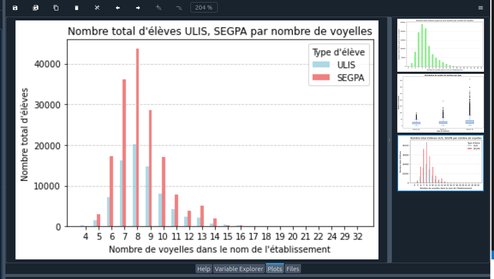
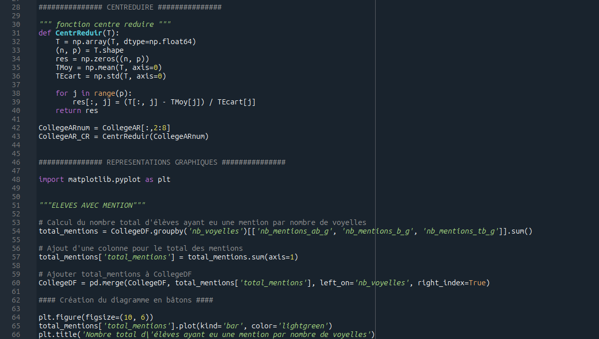
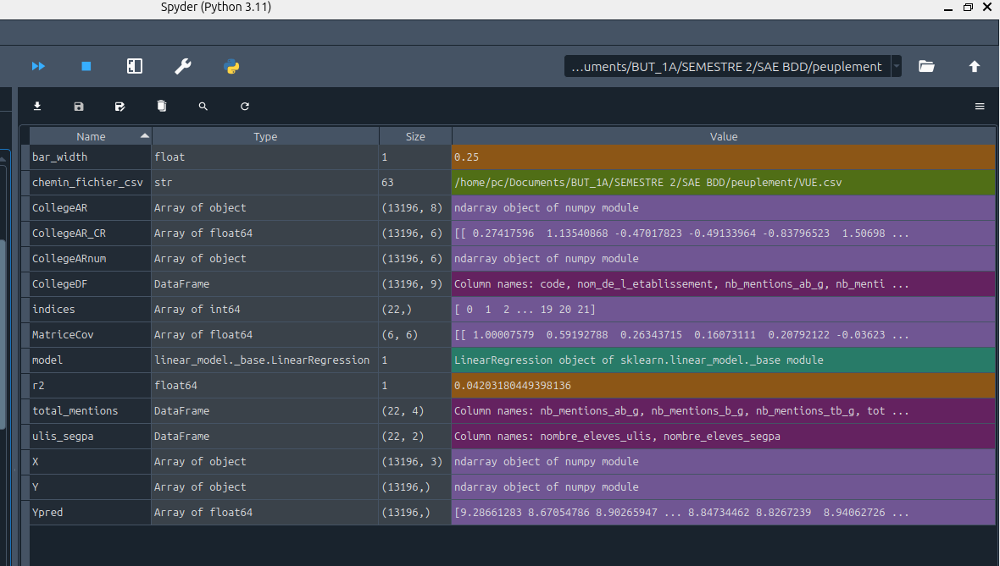
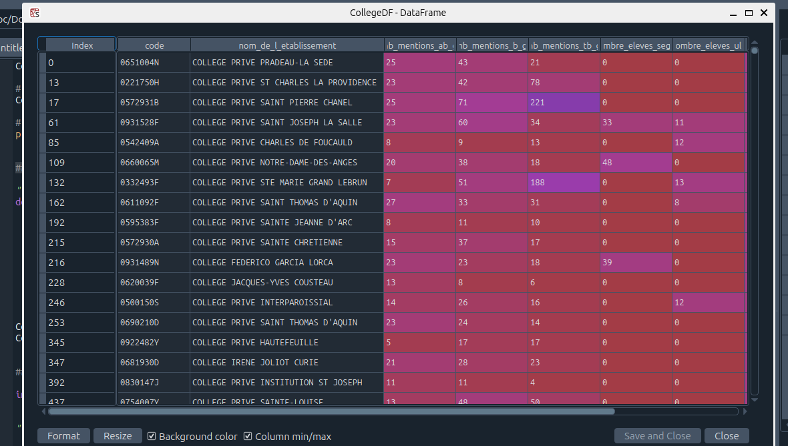

SAE 2.04 \
étude statistique d'une base de données
Gérer des données de l'information - Compétence 4
Création et peuplement d'une base de données complexe des Collèges de France. Etude statistique et visualisation de données menées à l'aide de divers bibliothèques Python
Étapes \
- Traduction d'un modèle de données en un schéma relationnel
- Peuplement à partir de données réelles et réflechir à la modification du schéma pour prendre en compte la réalité de ces données
- Concevoir des vues pour exploiter ces données pour en faire des synthèses, et exporter les données et exploiter les statistiques
- Rapport sur l'étude statistique menée autour d'une problématique choisie
Traces du Projet \
.py .png .sql
   Outils \
- Spyder
- Matplotlib
- Pandas
- NumPy
- SQLWorkbench